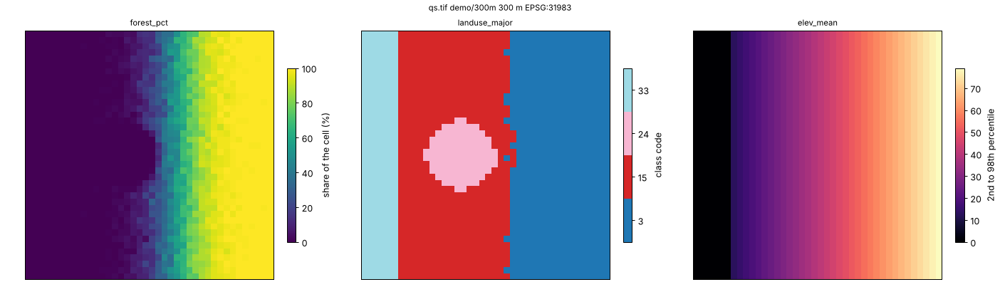

DisSCube¶
Model-ready grids from heterogeneous raster and vector sources, declared in one TOML file.
You say which grid you want, which sources feed it and which variables to derive. DisSCube checks the file, fetches
the data, aligns everything to the grid and gives back the variables, with the provenance of every number. It is the
data-preparation step of the DisSModel ecosystem, and the counterpart of TerraME's fill.
pip install disscube
disscube validate pipeline.toml # check the file; nothing is downloaded
disscube run pipeline.toml -o cube.tif
One file describes the whole preparation¶
schema = 1
name = "Quickstart"
[grid] # where: a 300 m grid
name = "demo/300m"
crs = "EPSG:31983"
bbox = [570000.0, 9708000.0, 582000.0, 9720000.0]
resolution = 300
[[source]] # from what: files, MapBiomas, BDC, OSM…
id = "landuse"
type = "file"
path = "../data/quickstart/landuse.tif"
crs = "EPSG:31983"
[[source]]
id = "elevation"
type = "file"
path = "../data/quickstart/elevation.tif"
crs = "EPSG:31983"
[[derive]] # which variables: one block each
target = "forest_pct"
source = "landuse"
operator = "percentage"
class_code = 3
[[derive]]
target = "landuse_major"
source = "landuse"
operator = "majority"
[[derive]]
target = "elev_mean"
source = "elevation"
operator = "mean"
The file is the experiment: it can be versioned, reviewed and re-run, and a change in any line changes the
fingerprint (spec_hash) of the variables it affects. This is examples/pipelines/quickstart.toml, which runs offline on the
synthetic data of the repository.
Several years? One block with years = [2000, 2020] and an id = "lulc_{year}" makes one source per year, and the
derivations that use {year} make one variable per year. See Pipeline files (TOML).
The commands¶
| Command | What it does |
|---|---|
disscube validate FILE |
checks the file and prints the plan, before any download |
disscube fetch FILE |
downloads the remote sources and checks their SHA-256 |
disscube run FILE |
fetches, aligns and derives; with -o OUT also exports a GeoTIFF or netCDF |
disscube export FILE -o OUT |
exports variables from a workspace that already has them |
disscube plot OUT.tif |
a quick look at the bands, as a PNG |
disscube validate examples/pipelines/quickstart.toml
disscube run examples/pipelines/quickstart.toml --workspace outputs/quickstart -o outputs/quickstart.tif
disscube plot outputs/quickstart.tif --cols 3

Every option is in the command-line reference. Errors exit with status 2 and --json gives the
report in a machine-readable form, so a pipeline runs in a script or in CI as it does on a laptop.
What you get¶
- The variables, one band per variable and year in the exported GeoTIFF (or netCDF), aligned to your grid.
- A workspace with the catalog, the stored variables and
run.json: the sources with their checksums, the fingerprint of each derivation, the times, and the file that produced it. Rerunning only redoes what changed. - Large sources without large memory. National rasters are read in blocks, so the peak memory depends on the block and not on the source: MapBiomas for all of Brazil at 5 km ran in under two hours with 3.9 GB (block-wise reading).
Sources in, one value per cell out¶
Sources (type): file (a raster, a vector layer or a shapefile in a zip), mapbiomas and prodes (national
land-cover maps), bdc (Brazil Data Cube, over STAC), classified (a classified map with its legend), osm
(OpenStreetMap), dem (elevation and slope) and union (several vector sources as one).
Operators summarise a source in each cell:
- statistics of a raster:
mean,median,min,max,std,sum - classes:
percentage,majority,minority(withgroups, to read leaf classes at level 1) - vector layers:
distance,min_distance,count,presence,area,attribute - road networks:
network_cost(alsogpm_network)
The sources are in the pipeline files guide, and the operators in
Operator System. From TerraME's fill, each operation has a counterpart, measured in
TerraME Fill Cells Correspondence.
Hand the cube to a model¶
The workspace opens as a cube in Python, and disscube[dissmodel] hands it to a DisSModel model:
from disscube import CubeClient
cube = CubeClient(catalog="outputs/quickstart/catalog.db", store="outputs/quickstart/store/")
ds = cube.to_dataset(["forest_pct", "elev_mean"], grid_id="demo/300m") # xarray.Dataset
backend = cube.to_raster_backend(["forest_pct", "landuse_major"], grid_id="demo/300m") # a DisSModel RasterBackend
pip install "disscube[dissmodel]" # + the hand-off to DisSModel
pip install "disscube[plot]" # + disscube plot
The same operations are available as a Python API (CubeClient, Derivation) for what does not fit in a file: see
Examples.
Where to go next¶
- Examples: the quickstart pipeline and the Python API on synthetic data, then real study areas
- Pipeline files (TOML): the format, the source types, the operator options
- Command line and Block-wise reading
- Sources: MapBiomas, PRODES and SITS, Brazil Data Cube, OpenStreetMap, elevation and slope
- Architecture: the model, the stages and the reproducibility hash
The DisSModel ecosystem¶
| Package | Role | Documentation |
|---|---|---|
| dissmodel | Core framework: clock, spatial substrates, executor, I/O, visualization | dissmodel.github.io/dissmodel |
| disscube | Declarative pipelines that turn raster and vector sources into model-ready grids | dissmodel.github.io/disscube |
| disslucc | Land use and cover change: demand, potential and allocation | dissmodel.github.io/disslucc |
| dissmodel-ca, dissmodel-sysdyn, dissmodel-abm | Ready-to-use cellular automata, system dynamics and agent-based models | GitHub |
Developed by the LambdaGeo group at the Federal University of Maranhão (UFMA). MIT licence.